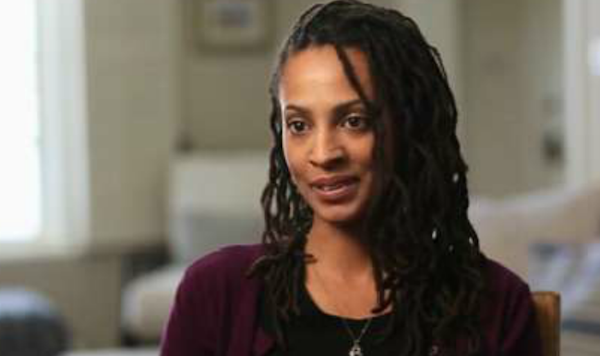

< < < Back
Liberal Harvard Professors Are Now “Rape Apologists” For Defending Due Process – Return Of Kings
Not once in their statement do they ever acknowledge that nearly 30 percent of women are sexually assaulted while at Harvard, nor do they express any concern about them. Their silence contributes to the ongoing problem of sexual assault at Harvard and Harvard Law.
— The makers of The Hunting Ground using poorly crafted “statistics” to accuse Harvard Law School professors of rape apologism for daring to ridicule the film’s rehashing of a now discredited allegation against student Brandon Winston
Much can be said about liberal Ivy League law and social science professors. On the one hand, they created the retrograde academic climate in which third wave feminism, rampant affirmative action, mass, often illegal immigration and other woes could be championed and implemented in the real political world.
Most surprisingly, though, they are still capable of sensing that the slippery slope they made even wetter may have gone too far. In this vein, nineteen Harvard Law School professors, of which at least the vast majority are liberal, have signed an open letter decrying the bias and inaccuracy of the “college rape” propaganda film The Hunting Ground.
This so-called documentary, co-produced by CNN, completely misrepresents or plain fabricates information about a number of disproven campus rape allegations, plus overall sexual assault numbers. The most egregious charracter assassination is against Harvard student Brandon Winston, whose name has been dragged through the mud multiple times both on and off campus.
His law studies were significantly sidetracked and he is still being attacked via the cinematic potshots of The Hunting Ground after being exonerated. Like Paul Nungesser, no amount of legal and other vindication will seemingly spare Winston from this fate.
Is leftist academia finally panicking about the newest cohort of SJWs?

Kamilah Willingham, the African-American answer to Emma Sulkowicz. With her claims against Brandon Winston discredited after both Harvard and law enforcement investigations, The Hunting Ground continues to falsely portray her as a “survivor”. She’s now creating a career as a professional SJW.
To their credit, despite helping spawn the overall circumstances in which millennial SJWs “grew up,” this is not the first time in recent memory when Harvard Law School academics have taken stances that expose them to the ire of their pupils. Nearly 30 signed an earlier exhortation for giving greater legal protections to those accused of university sexual assault.
This open letter to the Boston Globe responded to draconian college policies and procedures demanded by anti-due process fascists such as New York Senator Kirsten Gillibrand. Tellingly, the professors pointed out that these proposals contradicted the basic principles they were hired by Harvard to teach to students.
When otherwise pernicious feminist Nancy Gertner is one of those signing the most recent open letter, alongside perennial liberal Alan Dershowitz and Obama’s old mentor Charles Ogletree, you begin to sense how troubling the present campus environment is. Law professors who previously either supported or acquiesced to false structuralist arguments of patriarchal legal oppression are now angrily having to put their radical student charges in their place.
But are they succeeding? If anything, the battle between SJWs and elder academics demonstrates that the former group is probably already winning. CNN’s shameless showing of The Hunting Ground this week, all while claiming to be a news network, only adds fuel to an assertion that the insane are running the asylum of American college campuses.
The Hunting Ground is plumbing new lows in SJW rage-spiraling

Amy Herdy, a producer of The Hunting Ground, has shambolically tried to present the veneer of a balanced documentary whilst privately admitting she never intended to give an impartial account.
We do not operate the same way as journalists — this is a film project that is very much in the corner of advocacy for victims, so there would be no insensitive questions or the need to get the perpetrator’s side.
— Amy Herdy, producer of The Hunting Ground, admitting that she made no attempt to appraise both sides of the campus sexual assault debate and essentially organized a propaganda operation
The Harvard Law School professors are not merely responding to a run-of-the-mill social justice experiment when they question the methods of The Hunting Ground. Nor are they rejecting SJW arguments after they reached a critical mass of everyday attacks on common sense. Rather, this documentary represents a brand new phase in the culture wars. Instead of theatrical political attacks at rostrums or in street protests, SJWs are moving to theater and cinema itself.
With correctly timed music, camera angles and tears, purported documentaries are often able to achieve in one three second-long vignette what several thousand words of text in Time or a five hour New York City protest can. And the overarching device used by such filmmakers is an omission of facts and the substitution of emotion, the facts omitted being those that disagree with the filmmaker’s viewpoint.
This is why, for example, Kamilah Willingham is allowed to describe her “rape” without Amy Herdy and her colleagues including the raft of Harvard Law School and law enforcement findings proving that Willingham’s testimony was terribly contradictory and patently false. Or that the “evidence” she provided, a condom, was actually unrelated to the crime she was alleging and therefore demonstrates she unapologetic lied.
The ability of SJWs to plow ahead despite constant rape hoaxes is never-ending

Smells like false rape spirit.
Take a moment to reflect on three or four of the most infamous college rape allegations you remember. For me, the instances I recall most readily are the Duke lacrosse case, the UVA fraternity debacle, Emma Sulkowicz’s eternal attention-seeking and the witch-hunt against Brandon Winston, with which I was already familiar. All of these are either rape hoaxes or thoroughly vetted stories of a man who was not guilty of an accusation.
In a deep-seated irony, Harvard and certainly other semi-sensible professors are now coming up against the feral SJWs they helped to ideologically mould. These academic-student battles will rage on over the next several years, especially as a large number of other university intellectuals are either siding with SJWs or greatly fear coming out against them.
Like the Ingsoc-supporting parents in 1984 who fear being denounced by the same children they raised to love Big Brother, many academics are presently ruing the disastrous generation they allowed to take over American college campuses. It would be very funny if the ramifications for all male students weren’t so incredibly dire.
Read More: Team Of Imprisoned Felons Out-Debates Harvard Debate Squad